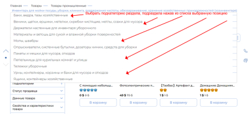
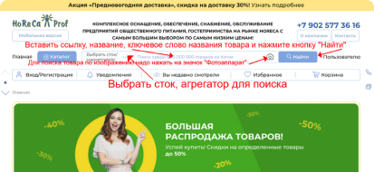
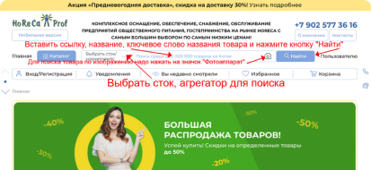
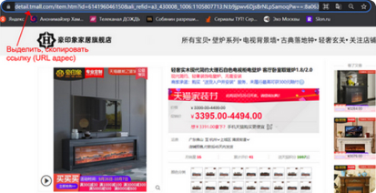
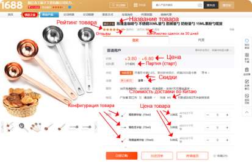
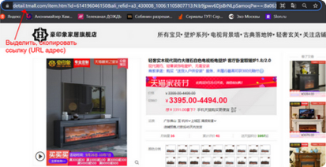
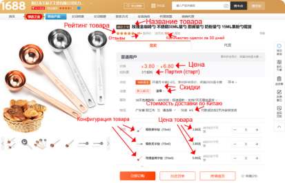
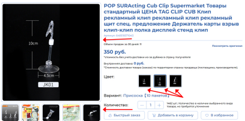

Часто задаваемые вопросы
- Как работает интернет-платформа HoReCaProf.ru
- Не смогли найти нужный товар, что делать?
- Соответствует ли фотография в карточке товара реальному товару?
- Как узнать стоимость отправления по Китаю?
- Как узнать стоимость товара на сайте Taobao (world.taobao.com)?
- Как определить вес товара на Таобао (world.taobao.com)?
- Как происходит проверка товара на брак и комплектность?
- Как заказать производство товаров на фабрике за рубежом в том числе в Китае?
-
Как работает интернет-платформа HoReCaProf.ru.
- Для того чтобы совершать какие-либо действия на нашем сайте вам необходимо зарегистрироваться на нашем сайте;
- Для того чтобы сделать заказ необходимо выбрать нужные позиции из представленного на сайте каталога, если у вас уже есть ссылка на нужную вам позицию(ии) например, на сайте Taobao или 1688, то вы вставляете ее в поисковое окно на нашем сайте, после чего нажав рядом на значок «Лупа» (поиск);
- Выбрав нужный товар, а также выбрав, если необходимо, размер, цвет, комплектацию или другие критерии и тактико-технические характеристики, ознакомившись и проверив стоимость ТМЦ, необходимо добавить выбранный товар(ры) в корзину;
- Вы можете вернутся далее к поиску нужного вам товара продолжая покупку или можете перейти к оформлению;
- Еще раз проверив выбранный вами товар, его количество и цены, если нужно, отредактировав его в заказе, вы оформляете свой заказ, указав все необходимые свои данные, подписав с нами договор или дав свое согласие на публичную оферту;
- Вы даете согласие на обработку ваших персональных данных и принимаете нашу политику по их обработке;
- Вы подтверждаете, что Вам исполнилось 18 лет;
Вы выбираете способ доставки из предложенных вариантов на сайте или можете предложить свой вариант доставки до вас груза; - Вы выбираете способ оплаты из предложенных вариантов, согласно выбранного вами способа сотрудничества с нашей компанией в рамках юридической процедуры, через договор или публичную оферту;
- Вы даете свое согласие на оформление вашего заказа со стороны нашей компании;
- Вы получаете на свою электронную почту подтверждающее письмо с данными вашего заказа для его обработки;
- После обработки вашего заказа вам будет отправлено письмо с описанием ваших дальнейших действий со вложенным файлом в котором будет описание вашего заказа с его стоимостью или счет на оплату (в зависимости какую правовую форму вы выбрали: договор или публичная оферта);
- Вы оплачиваете заказ, прежде чем внести предварительную оплату, необходимо внимательно проверить полученный вами от нас файл с вашим заказом, покупка производится строго по "бланку-заказа" (файлу-заказа) или по счету, который вы получаете от нашей компании на ваш E-mail, если Вы хотите изменить заказ, сообщайте об этом заранее, до оплаты заказа, если вы оплатили, вы автоматически подтверждаете свой заказ и соглашаетесь с условиями договора или публичной офертой, после внесения оплаты одним из возможных способов, необходимо сообщить об этом письмом на нашу электронную почту, с указанием предприятия или ФИО по заказу и суммы оплаты, после получения от вас письма, на вашу почту, будет отправлен вам ответ от менеджера компании с 8 до 20 часов по Владивостокскому времени (часовой пояс по Гринвичу (UTC) +15 часов) ежедневно в рабочие дни, о поступлении от вас денежных средств, способы оплаты: через офис, On-line оплата, переводом через расчетный счет;
- Мы выкупаем товар у зарубежных поставщиков, согласно выбранных вами позиций, если на момент выкупа у продавца товар закончился, то мы найдем такой же товар за туже цену у другого продавца или подберем и предложим вам аналогичный;
- Мы проверяем товар на соответствие его описанию, на видимые элементы брака и на соответствие выбранных вами характеристик (размер, цвет, комплектация и т.п.), необходимо помнить, что оттенки цветов при их передаче на экран устройства, может отличаться от фактических, после проверки, товар уже не подлежит возврату и обмену, так как наша компания в данном виде операций самостоятельно не продает товар, а оказывает услуги по его выкупу, доставки и оформлению по запросу покупателя, просим Вас тщательно ознакомиться с правилами нашего сайта и условиями договора и публичной оферты;
- Мы организуем доставку товара до покупателя, осуществляем отправку покупок товара на зарубежных сайтах во все регионы России, вы можете самостоятельно выбрать удобный для вас способ доставки, стоимость и сроки доставки зависят от вида груза, его веса, объема, от отдаленности продавца и покупателя, выбранного способа доставки (авиа, авто, ж/д, морской/речной, курьерский), вида доставки (посылка (бандероль), багаж, полет, контейнер, вагон, сборные грузы), выбранной почтовой, логистической (транспортной) компании и службы доставки, скорости доставки (грузовая, скоростная, экспресс доставка), также вы можете самостоятельно забрать свой товар с нашего склада (грузового двора) по предъявлению паспорта для физических лиц или по доверенности установленного образца для организаций и юридических лиц, при этом бесплатное хранение не более 3-х календарных дней, сроки доставки указываются приблизительно, так как много различных факторов влияет на время перевозки, как то наличие праздничных дней в том числе за рубежом, подготовка товара к отправке, карантинных мер, оформление груза на границе, загрузка, перегрузка, выгрузка, погодные условия и т.д., также нужно учитывать, что на стоимость доставки товара влияет наличие страховки товара и обрешетки груза, о необходимости которой вы должны сообщить нам по электронной почте или в чате на сайте при оформлении заказа.
-
Как найти нужный товар.
На нашем сайте HoReCaProf.ru подробный профессиональный каталог подобранных товаров для предприятий общественного питания и гостеприимства. Перейдя на страницу «Каталог», вы можете ознакомиться с большим количеством разделов и подразделов (категорий и подкатегорий) по разным направлениям; - Для этого Вам необходимо в шапке на странице «Главная» нажать кнопку «Каталог».Или в центральной части страницы «Главная» зайти в поле «Каталог» выбрать нужный подраздел каталога из уже частично предложенных.По открывшейся структуре каталога Вы можете пройти по его разделам и подразделам до нужного Вам вида товара переходя по выбранному подразделу на следующий, наведя на него курсор с ожиданием открытия следующего подраздела.На открывшейся страницы выбранного Вами раздела, подраздела каталога вы можете в шапке страницы в «крошках» навести и нажать курсором на предыдущий раздел, подраздел каталога и тем самым вернуться в предыдущую категорию, подкатегорию. Если наведете на него или текущий раздел, подраздел курсор и выдержите паузу, то откроется список подразделов, которые входят в него, чтобы Вы могли выбрать тот, что Вам подходит. Также Вы можете в боковом «Фильтре» каталога выбрав закладку «Подкатегории» подобрать нужную Вам подкатегорию текущего открытого раздела, подраздела.Нажав на выбранную категорию, подкатегорию каталога, Вы перейдете на нее, чтобы можно было подобрать нужный Вам товар или перейти в следующий раздел, подраздел каталога.
 Если необходимой категории, подкатегории нет в перечне или Вы не нашли то, что искали, то в шапке страницы «Каталог» в его разделах, подразделах выберите и нажмите «Весь ассортимент товаров»
Если необходимой категории, подкатегории нет в перечне или Вы не нашли то, что искали, то в шапке страницы «Каталог» в его разделах, подразделах выберите и нажмите «Весь ассортимент товаров» или в «Фильтре» в левом боковом меню «Каталога» нужно выбрать и нажать «Весь ассортимент товаров». Откроется страница со списком всех категорий и подкатегорий (разделов и подразделов), которые есть на сайте. Выберите и нажмите на любой раздел, подраздел каталога, затем выберите сток (собственные товары со склада) или поисковый агрегатор/маркетплейс (www.tmall.com/, s.taobao.com/, www.1688.com/ и другие), в котором подберете подходящий для Вас товар или перейдите в другую подкатегорию. Результаты можно отбирать, сортировать по разным параметрам. Для этого выпадающем меню в «Фильтре» каталога и выберите необходимые критерии отбора.В конечном выбранном разделе, подразделе (категории, подкатегории) каталога выберите для дальнейшего изучения подходящий Вам товар нажав на одну представленных карточек товара (изображение с названием, оценкой, ценой товара). А если товар Вам сразу понравился или подходит, то можете переместить его в «Избранное», нажав на значок «Сердечко» или переместить в корзину, нажав на кнопку «В корзину».В открывшейся «Карточке товара» внимательно изучите цены, варианты, характеристики, свойства, комплектации, описания, изображения и рейтинг товара, а также отзывы о нем других покупателей. Обратите внимание на рейтинг продавца в «Карточке товара». В рейтинге продавца есть сердечки, бриллианты и короны – это сводная оценка магазина на сайте покупателями от низкого к высокому. Начальная оценка - сердечки. Средняя оценка - бриллианты. Самая высокая оценка – это золотые короны. И если товар Вам понравился и подходит, то можете переместить его в «Избранное», нажав на кнопку «В избранное» или переместить в корзину, нажав на кнопку «Добавить в корзину» или оформить на него заказ нажав на кнопку «Быстрый заказ».Также можно искать нужный Вам товар на сайте HoReCaProf.ru через поисковое окно на страницах «Главная», «Каталог» по артикулу товара, ссылке в том числе и с поисковых агрегаторов/маркетплейсов (www.tmall.com/, s.taobao.com/, www.1688.com/ и других), названию, изображению (фото, картинка, скриншот) товара в пропорциях 1:1 или 3:4, размером не более 200 Кб, в формате JPG, PNG, или JPEG. Текст названия товара, ключевое слово названия товара можно водить в строку поиска на русском, английском, китайском языке методом подбора. Затем выберите сток (собственные товары со склада) или поисковый агрегатор/маркетплейс (www.tmall.com/, s.taobao.com/, www.1688.com/ и другие), в котором подберете подходящий для Вас товар. Если не сделать выбор, то по умолчанию будет стоять агрегатор/маркетплейс s.taobao.com/. И нажмите кнопку поиска «Найти».Если Вам не удалось найти товар, который Вы хотели приобрести на нашем сайте в разделах предоставленного каталога, то можно искать товар через оригинальную карточку товара на s.taobao.com/, www.1688.com/. Необходимо зайти на нужный Вам раздел, подраздел каталога. Например, Каталог –> Товары –> Товары промышленные –> Декор, элементы декора и украшений помещений, фасадов –> Зеркала –> Зеркало декоративное. В предложенном списке ТМЦ выбрать максимально подходящий Вам товар;Зайти в карточку товара, который Вам максимально подходит и нажать курсором на надпись: «Ссылка на оригинал»;В открывшийся оригинальной карточки товара, например на торговой площадке world.taobao.com/, в строке вашего браузера, в правом верхнем углу нажать значок «Перевести эту страницу», для того, чтобы сделать перевод для понимания представленной информации. Если на вашем браузере нет значка перевода, то наведите курсор мышки на свободное поле страницы и нажмите правую клавишу мышки, в открывшемся меню выберите команду «Перевести на русский»;Важно! Если Вы не зарегистрированы и не имеете свой аккаунт на сайте world.taobao.com/ то у Вас может не открыться оригинальная карточка товара на данном ресурсе. Поэтому необходимо зарегистрироваться или обратиться к администратору сайта или менеджеру компании или можете перейти для поиска на другой агрегатор/маркетплейс, например www.1688.com/; - На данной странице выбранного максимально подходящего для Вас товара найдите переход на каталог данного продавца. Часто в результате перевода можно прочитать: «Просмотреть все детские», «Все детка» и т.п. Это и есть переход в раздел, подразделы «Каталога» на странице продавца товара. Вы перейдете в каталог, нажав на данную надпись;В открывшемся каталоге продавца Вы можете уже выбрать тот товар, который Вам подходит, нажав на его фото;Внимательно изучите товар в открывшейся оригинальной карточке ТМЦ. Необходимо в карточке товара задать (выбрать) нужные конфигурации товара: цвет, размер, комплектацию и другие характеристики. Обратите внимание, что при этом стоимость товара может поменяться;Если товар Вам подходит, и Вы хотите заказать выбранный продукт, Вам необходимо скопировать ссылку (URL адрес) товара на китайском сайтеили артикул товара в ссылке (URL адрес) на сайте агрегатора/маркетплейса (www.tmall.com/, s.taobao.com/, www.1688.com/ и других)и вставьте ее в строку поиска на сайте horecaprof.ru/, попробовав найти нужный Вам товар на нашем сайте, и заказать его или отправьте ее нам в чат на нашем сайте или на электронную почту, Skype, WhatsApp, WeChat (если будете отправлять артикул товара, то обязательно укажите с какого сайта Вы его копировали); - В примечании можно указать ваши контакты (телефон должен указывать в формате +7 (xxx) xxx-xx-xx) и любую информацию (адрес доставки, количество, нужный вам вес, размер, цвет и другие детали, относящиеся к данному товару); - После получения от Вас заказа, наши менеджеры рассчитают стоимость его исходя из стоимости товара на сайте, курса валют, доставки по Китаю, таможенной очистки, стоимости наших услуг и доставки по России до пункта выдачи или до грузового двора транспортной, логистической компании, почтовой службы для дальнейшей отправки заказа до адресата получателя; - После расчета стоимости и сроков поставки наши менеджеры свяжутся с Вами в ближайшее время; - Если Вам не удалось найти товар, который Вы хотели приобрести, то необходимо обратиться за помощью к оператору сайта или менеджеру нашей компании; - Вы можете написать нам в наш чат на сайте, на электронную почту, Skype, WhatsApp, WeChat, либо воспользоваться помощью администратора на сайте или менеджера компании. При составлении обращения обязательно укажите название и все характеристики нужного вам товара или приложите его изображение; - Если Вы уже нашли нужный Вам товар на одном из китайских сайтов, то скопируйте на его странице ссылку (URL адрес) и вставьте в строку вновь открытого браузера или в строку поиска сайта поисковика, например Google, Yandex или китайского поисковика www.baidu.com/; - Если стартовая страница не открывается, и Вам предлагают открыть копию, то соглашайтесь или попробуйте заново, только в начале вставьте в строку браузера или в стоку поиска сайта поисковика название сайта из ссылки и уж затем в поисковом окне открывшегося сайта Вы вставляете ссылку целиком или переходите на открывшемся сайте на страничку «Продукты» (Товар, 产品展示 , Product). Очень часто в переводе с китайского на русский написано «Детка», «Вся детка» и т.п; - Самым простым способом найти любой нужный Вам товар в Китае, является следующий: Заходите на сайты, интернет-магазины, маркетплейсы на русском языке, например, на aliexpress.ru/, market.yandex.ru/, www.wildberries.ru/ и другие, введите там в поисковую строку название нужного товара по-русски. Например, «камин электрический».При получении нужного результата, зайдите в карточку товара и сохраните изображение (фото, картинка, скриншот) товара в пропорциях 1:1 или 3:4, размером не более 200 Кб, в формате JPG, PNG или JPEG.После чего зайдите на один из китайских маркетплейсов, например, s.taobao.com/, www.1688.com/ или поисковик www.baidu.com/ и в поисковой строке нажав рядом на значок «Фотоаппарат» (поиск по изображению).Выберите ранее сохраненное изображение и вам на сайте будут предложены различные варианты товара, который Вы ищите. Выберите, который Вам подходит. Выбрав подходящий товар, нажмите на его фото.Внимательно изучите товар в открывшейся оригинальной карточке ТМЦ, если товар Вам подходит, и Вы хотите заказать выбранный продукт, Вам необходимо скопировать ссылку (URL адрес) товара на китайском сайте и отправить ее нам в чат на нашем сайте или на электронную почту, Skype, WhatsApp, WeChat;
или в «Фильтре» в левом боковом меню «Каталога» нужно выбрать и нажать «Весь ассортимент товаров». Откроется страница со списком всех категорий и подкатегорий (разделов и подразделов), которые есть на сайте. Выберите и нажмите на любой раздел, подраздел каталога, затем выберите сток (собственные товары со склада) или поисковый агрегатор/маркетплейс (www.tmall.com/, s.taobao.com/, www.1688.com/ и другие), в котором подберете подходящий для Вас товар или перейдите в другую подкатегорию. Результаты можно отбирать, сортировать по разным параметрам. Для этого выпадающем меню в «Фильтре» каталога и выберите необходимые критерии отбора.В конечном выбранном разделе, подразделе (категории, подкатегории) каталога выберите для дальнейшего изучения подходящий Вам товар нажав на одну представленных карточек товара (изображение с названием, оценкой, ценой товара). А если товар Вам сразу понравился или подходит, то можете переместить его в «Избранное», нажав на значок «Сердечко» или переместить в корзину, нажав на кнопку «В корзину».В открывшейся «Карточке товара» внимательно изучите цены, варианты, характеристики, свойства, комплектации, описания, изображения и рейтинг товара, а также отзывы о нем других покупателей. Обратите внимание на рейтинг продавца в «Карточке товара». В рейтинге продавца есть сердечки, бриллианты и короны – это сводная оценка магазина на сайте покупателями от низкого к высокому. Начальная оценка - сердечки. Средняя оценка - бриллианты. Самая высокая оценка – это золотые короны. И если товар Вам понравился и подходит, то можете переместить его в «Избранное», нажав на кнопку «В избранное» или переместить в корзину, нажав на кнопку «Добавить в корзину» или оформить на него заказ нажав на кнопку «Быстрый заказ».Также можно искать нужный Вам товар на сайте HoReCaProf.ru через поисковое окно на страницах «Главная», «Каталог» по артикулу товара, ссылке в том числе и с поисковых агрегаторов/маркетплейсов (www.tmall.com/, s.taobao.com/, www.1688.com/ и других), названию, изображению (фото, картинка, скриншот) товара в пропорциях 1:1 или 3:4, размером не более 200 Кб, в формате JPG, PNG, или JPEG. Текст названия товара, ключевое слово названия товара можно водить в строку поиска на русском, английском, китайском языке методом подбора. Затем выберите сток (собственные товары со склада) или поисковый агрегатор/маркетплейс (www.tmall.com/, s.taobao.com/, www.1688.com/ и другие), в котором подберете подходящий для Вас товар. Если не сделать выбор, то по умолчанию будет стоять агрегатор/маркетплейс s.taobao.com/. И нажмите кнопку поиска «Найти».Если Вам не удалось найти товар, который Вы хотели приобрести на нашем сайте в разделах предоставленного каталога, то можно искать товар через оригинальную карточку товара на s.taobao.com/, www.1688.com/. Необходимо зайти на нужный Вам раздел, подраздел каталога. Например, Каталог –> Товары –> Товары промышленные –> Декор, элементы декора и украшений помещений, фасадов –> Зеркала –> Зеркало декоративное. В предложенном списке ТМЦ выбрать максимально подходящий Вам товар;Зайти в карточку товара, который Вам максимально подходит и нажать курсором на надпись: «Ссылка на оригинал»;В открывшийся оригинальной карточки товара, например на торговой площадке world.taobao.com/, в строке вашего браузера, в правом верхнем углу нажать значок «Перевести эту страницу», для того, чтобы сделать перевод для понимания представленной информации. Если на вашем браузере нет значка перевода, то наведите курсор мышки на свободное поле страницы и нажмите правую клавишу мышки, в открывшемся меню выберите команду «Перевести на русский»;Важно! Если Вы не зарегистрированы и не имеете свой аккаунт на сайте world.taobao.com/ то у Вас может не открыться оригинальная карточка товара на данном ресурсе. Поэтому необходимо зарегистрироваться или обратиться к администратору сайта или менеджеру компании или можете перейти для поиска на другой агрегатор/маркетплейс, например www.1688.com/; - На данной странице выбранного максимально подходящего для Вас товара найдите переход на каталог данного продавца. Часто в результате перевода можно прочитать: «Просмотреть все детские», «Все детка» и т.п. Это и есть переход в раздел, подразделы «Каталога» на странице продавца товара. Вы перейдете в каталог, нажав на данную надпись;В открывшемся каталоге продавца Вы можете уже выбрать тот товар, который Вам подходит, нажав на его фото;Внимательно изучите товар в открывшейся оригинальной карточке ТМЦ. Необходимо в карточке товара задать (выбрать) нужные конфигурации товара: цвет, размер, комплектацию и другие характеристики. Обратите внимание, что при этом стоимость товара может поменяться;Если товар Вам подходит, и Вы хотите заказать выбранный продукт, Вам необходимо скопировать ссылку (URL адрес) товара на китайском сайтеили артикул товара в ссылке (URL адрес) на сайте агрегатора/маркетплейса (www.tmall.com/, s.taobao.com/, www.1688.com/ и других)и вставьте ее в строку поиска на сайте horecaprof.ru/, попробовав найти нужный Вам товар на нашем сайте, и заказать его или отправьте ее нам в чат на нашем сайте или на электронную почту, Skype, WhatsApp, WeChat (если будете отправлять артикул товара, то обязательно укажите с какого сайта Вы его копировали); - В примечании можно указать ваши контакты (телефон должен указывать в формате +7 (xxx) xxx-xx-xx) и любую информацию (адрес доставки, количество, нужный вам вес, размер, цвет и другие детали, относящиеся к данному товару); - После получения от Вас заказа, наши менеджеры рассчитают стоимость его исходя из стоимости товара на сайте, курса валют, доставки по Китаю, таможенной очистки, стоимости наших услуг и доставки по России до пункта выдачи или до грузового двора транспортной, логистической компании, почтовой службы для дальнейшей отправки заказа до адресата получателя; - После расчета стоимости и сроков поставки наши менеджеры свяжутся с Вами в ближайшее время; - Если Вам не удалось найти товар, который Вы хотели приобрести, то необходимо обратиться за помощью к оператору сайта или менеджеру нашей компании; - Вы можете написать нам в наш чат на сайте, на электронную почту, Skype, WhatsApp, WeChat, либо воспользоваться помощью администратора на сайте или менеджера компании. При составлении обращения обязательно укажите название и все характеристики нужного вам товара или приложите его изображение; - Если Вы уже нашли нужный Вам товар на одном из китайских сайтов, то скопируйте на его странице ссылку (URL адрес) и вставьте в строку вновь открытого браузера или в строку поиска сайта поисковика, например Google, Yandex или китайского поисковика www.baidu.com/; - Если стартовая страница не открывается, и Вам предлагают открыть копию, то соглашайтесь или попробуйте заново, только в начале вставьте в строку браузера или в стоку поиска сайта поисковика название сайта из ссылки и уж затем в поисковом окне открывшегося сайта Вы вставляете ссылку целиком или переходите на открывшемся сайте на страничку «Продукты» (Товар, 产品展示 , Product). Очень часто в переводе с китайского на русский написано «Детка», «Вся детка» и т.п; - Самым простым способом найти любой нужный Вам товар в Китае, является следующий: Заходите на сайты, интернет-магазины, маркетплейсы на русском языке, например, на aliexpress.ru/, market.yandex.ru/, www.wildberries.ru/ и другие, введите там в поисковую строку название нужного товара по-русски. Например, «камин электрический».При получении нужного результата, зайдите в карточку товара и сохраните изображение (фото, картинка, скриншот) товара в пропорциях 1:1 или 3:4, размером не более 200 Кб, в формате JPG, PNG или JPEG.После чего зайдите на один из китайских маркетплейсов, например, s.taobao.com/, www.1688.com/ или поисковик www.baidu.com/ и в поисковой строке нажав рядом на значок «Фотоаппарат» (поиск по изображению).Выберите ранее сохраненное изображение и вам на сайте будут предложены различные варианты товара, который Вы ищите. Выберите, который Вам подходит. Выбрав подходящий товар, нажмите на его фото.Внимательно изучите товар в открывшейся оригинальной карточке ТМЦ, если товар Вам подходит, и Вы хотите заказать выбранный продукт, Вам необходимо скопировать ссылку (URL адрес) товара на китайском сайте и отправить ее нам в чат на нашем сайте или на электронную почту, Skype, WhatsApp, WeChat; В примечании можно указать ваши контакты (телефон должен указывать в формате +7 (xxx) xxx-xx-xx) и любую информацию (адрес доставки, количество, нужный вам вес, размер, цвет и другие детали, относящиеся к данному товару); - После получения от Вас заказа, наши менеджеры рассчитают стоимость его исходя из стоимости товара на сайте, курса валют, доставки по Китаю, таможенной очистки, стоимости наших услуг и доставки по России до пункта выдачи или до грузового двора транспортной, логистической компании, почтовой службы для дальнейшей отправки заказа до адресата получателя; - После расчета стоимости и сроков поставки наши менеджеры свяжутся с Вами в ближайшее время. - Другой простой способ найти любой нужный Вам товар в Китае, является следующий: Заходите в переводчик translate.google.ru/, а лучше bkrs.info/ введите там название нужного товара по-русски, переведите на китайский или введите название товара по-русски, затем переведите на английский, после чего переводите на китайский (упрощенный), данная цепочка перевода даст лучший результат перевода с русского на китайский язык. Путем подбора выбирайте подходящий перевод и копируете подходящие иероглифы перевода. Также поисковики китайских сайтов хорошо ищут (подбирают) позиции (товар, услуги) по названиям на английском языке. Например, «электрический камин».Заходите на выбранный Вами китайский сайт, например, Байду www.baidu.com/ или Алибаба www.1688.com/, Таобао s.taobao.com/, вставляйте скопированное название на китайском языке в их поисковые строки, нажимаете большую рыжую кнопку поиска справа от строки поиска - и получаете результат виде изображений товара или ссылок на него.Или начните поиск по изображению (фото, картинка, скриншот) товара в пропорциях 1:1 или 3:4, размером не более 200 Кб, в формате JPG, PNG или JPEG. Также можно вставить в поле поиска (строку поиска) URL-картинки (ее можно узнать, наведя курсор мыши на выбранную картинку в интернете, а после нажав правой кнопкой мышки вызвать меню и выбрав команду «Копировать URL картинки", нажать на нее).Перейдя в предложенную категорию товара или перейдя по выбранной Вами ссылки на соответствующий раздел сайта, Вы сможете выбрать понравившийся вам товар.Внимательно изучите товар в открывшейся оригинальной карточке ТМЦ. Необходимо в карточке товара задать (выбрать) нужные конфигурации товара: цвет, размер, комплектацию и другие характеристики. Обратите внимание, что при этом стоимость товара может поменяться. Если товар Вам подходит, и Вы хотите заказать выбранный продукт, Вам необходимо скопировать ссылку (URL адрес) товара на китайском сайте и отправить ее нам в чат на сайте или на электронную почту, Skype, WhatsApp, WeChat.В примечании можно указать ваши контакты (телефон должен указывать в формате +7 (xxx) xxx-xx-xx) и любую информацию (адрес доставки, количество, нужный вам вес, размер, цвет и другие детали, относящиеся к данному товару); - После получения от Вас заказа, администраторы сайта или менеджеры компании рассчитают стоимость его, исходя из стоимости товара на сайте, курса валют, доставки по Китаю, таможенной очистки, стоимости наших услуг и доставки по России до пункта выдачи или до грузового двора транспортной, логистической компании, почтовой службы для дальнейшей отправки заказа до адресата получателя; - После расчета стоимости и сроков поставки администраторы сайта или наши менеджеры компании свяжутся с Вами в ближайшее время. - Поиск товара по поставщику (продавец, производитель). Данный способ позволяет подобрать товар от надежного и проверенного поставщика из-за рубежа, учитывая его срок нахождения на площадке, сроки поставки, цены на товар, статистику и оценки его качество товаров и услуг в том числе доставки, сервиса, возвратов, отзывов о нем, и конечно рейтинг поставщика; - Например, чтобы отобрать производителей и оптовых поставщиков товара, необходимо на маркетплейсе www.1688.com/ после подбора нужного товара по его названию, ключевому слову или изображению, найти и нажать кнопки «Производитель» (找工厂), «Поставщик» (找供应商) на этой же страницы, где Вы уже осуществили подбор товара, после чего заново нужно в шапке страницы нажать в поисковой строке кнопку «Поиск» (搜索).Далее можно на маркетплейсе www.1688.com/ продолжить отбор производителей и оптовых поставщиков по различным критериям, в том числе: ставка/скорость возврата (回头率), скорость отклика (响应率), транзакции/сделки за 90 дней (成交数量), (近90天成交笔数), проверенные маркетплейсом 1688 на количество продаж, сроки доставки, качество товара (实力商家), география/регионы поставки (所在地区), площадь предприятия (厂房面积), количество сотрудников на предприятии (员工人数). Также стоит обратить внимание на название предприятие, адрес (место нахождение) предприятия, на виды товара с которыми вышло на рынок предприятие, о наличии сертификата и на иную другую информацию о предприятии.Перейдя на страницу выбранного производителя или оптового поставщика Вы выбираете понравившийся и подходящий Вам товар или сразу переходите в карточку товара из предложенного ассортимента. Внимательно изучите товар в открывшейся оригинальной карточке товара на www.1688.com/. Необходимо в карточке товара прочитать название товара, обратить внимание на рейтинг товара и отзывы о нем, количество сделок с данным товаром за последние 30 дней, на цены на товар, в том числе в зависимости от количества в партии при закупке, на скидки на товар, на стоимость доставки по Китаю, изучить, задать (выбрать) нужные конфигурации товара: цвет, размер, комплектацию и другие характеристики. Обратите внимание, что при этом стоимость товара может поменяться.
В примечании можно указать ваши контакты (телефон должен указывать в формате +7 (xxx) xxx-xx-xx) и любую информацию (адрес доставки, количество, нужный вам вес, размер, цвет и другие детали, относящиеся к данному товару); - После получения от Вас заказа, наши менеджеры рассчитают стоимость его исходя из стоимости товара на сайте, курса валют, доставки по Китаю, таможенной очистки, стоимости наших услуг и доставки по России до пункта выдачи или до грузового двора транспортной, логистической компании, почтовой службы для дальнейшей отправки заказа до адресата получателя; - После расчета стоимости и сроков поставки наши менеджеры свяжутся с Вами в ближайшее время. - Другой простой способ найти любой нужный Вам товар в Китае, является следующий: Заходите в переводчик translate.google.ru/, а лучше bkrs.info/ введите там название нужного товара по-русски, переведите на китайский или введите название товара по-русски, затем переведите на английский, после чего переводите на китайский (упрощенный), данная цепочка перевода даст лучший результат перевода с русского на китайский язык. Путем подбора выбирайте подходящий перевод и копируете подходящие иероглифы перевода. Также поисковики китайских сайтов хорошо ищут (подбирают) позиции (товар, услуги) по названиям на английском языке. Например, «электрический камин».Заходите на выбранный Вами китайский сайт, например, Байду www.baidu.com/ или Алибаба www.1688.com/, Таобао s.taobao.com/, вставляйте скопированное название на китайском языке в их поисковые строки, нажимаете большую рыжую кнопку поиска справа от строки поиска - и получаете результат виде изображений товара или ссылок на него.Или начните поиск по изображению (фото, картинка, скриншот) товара в пропорциях 1:1 или 3:4, размером не более 200 Кб, в формате JPG, PNG или JPEG. Также можно вставить в поле поиска (строку поиска) URL-картинки (ее можно узнать, наведя курсор мыши на выбранную картинку в интернете, а после нажав правой кнопкой мышки вызвать меню и выбрав команду «Копировать URL картинки", нажать на нее).Перейдя в предложенную категорию товара или перейдя по выбранной Вами ссылки на соответствующий раздел сайта, Вы сможете выбрать понравившийся вам товар.Внимательно изучите товар в открывшейся оригинальной карточке ТМЦ. Необходимо в карточке товара задать (выбрать) нужные конфигурации товара: цвет, размер, комплектацию и другие характеристики. Обратите внимание, что при этом стоимость товара может поменяться. Если товар Вам подходит, и Вы хотите заказать выбранный продукт, Вам необходимо скопировать ссылку (URL адрес) товара на китайском сайте и отправить ее нам в чат на сайте или на электронную почту, Skype, WhatsApp, WeChat.В примечании можно указать ваши контакты (телефон должен указывать в формате +7 (xxx) xxx-xx-xx) и любую информацию (адрес доставки, количество, нужный вам вес, размер, цвет и другие детали, относящиеся к данному товару); - После получения от Вас заказа, администраторы сайта или менеджеры компании рассчитают стоимость его, исходя из стоимости товара на сайте, курса валют, доставки по Китаю, таможенной очистки, стоимости наших услуг и доставки по России до пункта выдачи или до грузового двора транспортной, логистической компании, почтовой службы для дальнейшей отправки заказа до адресата получателя; - После расчета стоимости и сроков поставки администраторы сайта или наши менеджеры компании свяжутся с Вами в ближайшее время. - Поиск товара по поставщику (продавец, производитель). Данный способ позволяет подобрать товар от надежного и проверенного поставщика из-за рубежа, учитывая его срок нахождения на площадке, сроки поставки, цены на товар, статистику и оценки его качество товаров и услуг в том числе доставки, сервиса, возвратов, отзывов о нем, и конечно рейтинг поставщика; - Например, чтобы отобрать производителей и оптовых поставщиков товара, необходимо на маркетплейсе www.1688.com/ после подбора нужного товара по его названию, ключевому слову или изображению, найти и нажать кнопки «Производитель» (找工厂), «Поставщик» (找供应商) на этой же страницы, где Вы уже осуществили подбор товара, после чего заново нужно в шапке страницы нажать в поисковой строке кнопку «Поиск» (搜索).Далее можно на маркетплейсе www.1688.com/ продолжить отбор производителей и оптовых поставщиков по различным критериям, в том числе: ставка/скорость возврата (回头率), скорость отклика (响应率), транзакции/сделки за 90 дней (成交数量), (近90天成交笔数), проверенные маркетплейсом 1688 на количество продаж, сроки доставки, качество товара (实力商家), география/регионы поставки (所在地区), площадь предприятия (厂房面积), количество сотрудников на предприятии (员工人数). Также стоит обратить внимание на название предприятие, адрес (место нахождение) предприятия, на виды товара с которыми вышло на рынок предприятие, о наличии сертификата и на иную другую информацию о предприятии.Перейдя на страницу выбранного производителя или оптового поставщика Вы выбираете понравившийся и подходящий Вам товар или сразу переходите в карточку товара из предложенного ассортимента. Внимательно изучите товар в открывшейся оригинальной карточке товара на www.1688.com/. Необходимо в карточке товара прочитать название товара, обратить внимание на рейтинг товара и отзывы о нем, количество сделок с данным товаром за последние 30 дней, на цены на товар, в том числе в зависимости от количества в партии при закупке, на скидки на товар, на стоимость доставки по Китаю, изучить, задать (выбрать) нужные конфигурации товара: цвет, размер, комплектацию и другие характеристики. Обратите внимание, что при этом стоимость товара может поменяться.Если товар Вам подходит, и Вы хотите заказать выбранный продукт, Вам необходимо скопировать ссылку (URL адрес) товара на китайском сайте и отправить ее нам в чат на сайте или на электронную почту, Skype, WhatsApp, WeChat или самостоятельно связаться с поставщиком, производителем. - В примечании можно указать ваши контакты (телефон должен указывать в формате +7 (xxx) xxx-xx-xx) и любую информацию (адрес доставки, количество, нужный вам вес, размер, цвет и другие детали, относящиеся к данному товару); - После получения от Вас заказа, администраторы сайта или менеджеры компании рассчитают стоимость его, исходя из стоимости товара на сайте, курса валют, доставки по Китаю, таможенной очистки, стоимости наших услуг и доставки по России до пункта выдачи или до грузового двора транспортной, логистической компании, почтовой службы для дальнейшей отправки заказа до адресата получателя; - После расчета стоимости и сроков поставки администраторы сайта или наши менеджеры компании свяжутся с Вами в ближайшее время.
-
Соответствие фотографий в карточке товара реальному товару.
Сотрудники интернет ресурса при получении товара на складе проверяют его на соответствие указанным характеристикам и на визуальное отсутствие брака, сравнение соответствия осуществляется с изображением и описанием товара в карточке товара на интернет платформе.
Важно! Некоторые продавцы используют профессиональные фотографии своих товаров, поэтому реальные оттенки указанных цветов могут отличаться, также необходимо помнить, что цвета передача также отличается у различных мониторов, экранов компьютеров, гаджетов, ноутбуков и планшетов.
-
Как узнать стоимость отправления по Китаю.
Чтобы узнать стоимость отправления (доставки) выбранного Заказчиком товара по Китаю, Заказчику необходимо в карточке выбранного товара перейти по ссылке на оригинал данного товара нажав на соответствующую надпись: «Посмотреть оригинал».В открывшейся оригинальной карточке товара на зарубежном маркетплейсе необходимо перевести страницу, чтобы понимать контент. Для этого нужно нажать на значок перевода в браузере справа от строки с URL адресом.В разделе доставки выбрать службу доставки (перевозки), после чего выбрать конечный населенный пункт доставки в Китае.Необходимо учитывать стоимость доставки по Китаю исходя из условий транспортной, логистической, курьерской, почтовой службы, расчет стоимости отправления по Китаю указывается за единицу товара, за 1 килограмм товара, за всю партию товара, за весь вес товара.
-
Как узнать стоимость товара на сайте Taobao (https://world.taobao.com/).
Стоимость товара указана в ценах в карточке товара. Как правило указывается две цены, одна по прайсу, другая со скидкой. Лучше смотреть цену товара в оригинальной карточке ТМЦ. Также цена в карточке может меняться от фасовки, комплектации товара, размера, цвета, вида упаковки и других характеристик, а также от количества приобретаемого товара. Стоимость товара складывается из его цены и транспортировки его по Китаю.
Порядок действий проиллюстрирован на изображенных скриншотах на конкретном примере.Необходимо помнить, что цена товара на сайте может измениться в любой момент, даже, когда вы оформили заказ, но еще не успели его проплатить.
-
Как определить вес товара на сайте Taobao (https://world.taobao.com/).
Вес товара указывается в карточки товара, он может быть указан в его названии, в изображении ТМЦ, в его описании. Лучше искать вес товара в оригинальной карточке товара. В случаи если вес товара не указан в нужной карточке товара, то он может быть указан в другой карточки аналогичного товара. Вес можно узнать у Продавца (Поставщика) через менеджера Исполнителя, а также Заказчик может самостоятельно найти нужный вес товара в справочниках или «справочно» на других ресурсах.
Порядок действий проиллюстрирован на изображенных скриншотах на конкретном примере.Ниже приведен примерный вес товара, в т.ч. вещей (без упаковки). Например, вес коробки для обуви – 300 грамм.
Категория Товар Вес в граммах (примерно) Блузки женские Шифоновая блузка с рукавами 350 Шифоновая блузка без рукавов 270 Блузка из хлопка 320 Брюки, шорты, леггинсы женские Бриджи 390 Леггинсы 200 Шорты 290 Мини-шорты 250 Брюки (хлопок, синтетика) 670 Капри (хлопок, деним) 520 Капри (синтетика) 350 Верхняя одежда, куртки, ветровки женские Плащ 850 Ветровка 450 Толстовки, худи женские Худи 700 Толстовка 600 Шерстяное пальто женское Пальто до колена (синтетика) 1000 Пальто до колена (шерсть) 1200 Джинсы женские Джинсы 560 Жакеты, блейзеры женские Жакет 500 Блейзер 550 Жилеты женские Жилетка (хлопок) 300 Жилетка (синтетика) 200 Меховая одежда женская Шуба до колена 800 Жилетка меховая 500 Куртки теплые женские Куртка утепленная, пуховик 850 Майки, топы женские Топ с длинным рукавом (хлопок) 510 Топ с коротким рукавом (хлопок) 350 Майка 280 Одежда из кожи женская Жакет 500 Платья женские Платье до колена с длинным рукавом (хлопок) 480 Платье до колена с длинным рукавом (синтетика) 300 Платье до колена с длинным рукавом (шерсть) 600 Платье до колена с коротким рукавом (шифон) 350 Платье до колена с коротким рукавом (хлопок) 300 Платье до колена с коротким рукавом (синтетика) 350 Платье до колена с коротким рукавом (шерсть) 520 Брюки костюмные Бриджи (хлопок) 500 Шорты (хлопок) 400 Верхняя одежда весна-осень Ветровка (хлопок, другие материалы) 800 Куртка из кожи 900 Полупальто (хлопок) 900 Плащ (хлопок) 850 Плащ (другие материалы) 730 Верхняя одежда осень-зима Куртка, пуховик 850 Полупальто (шерсть) 1200 Деловые костюмы Костюм (искусственные материалы) 1500 Джинсы Джинсы (стандартная длина 950 Джинсовые бриджи 700 Джинсовые шорты 450 Жилеты, безрукавки Жилет (синтетика) 450 Жилет (синтетика) 550 Пуховой жилет с капюшоном 780 Пуховой жилет без капюшона 700 Майка-безрукавка (хлопок) 300 Толстовки, худи Толстовки с капюшоном, худи 700 Толстовки без капюшона 600 Кожаные брюки Брюки кожаные 500 Куртки, пиджаки Курка (кожзаменитель) 700 Курка (кожа) 700 Курка (хлопок + нейлон) 700 Курка (хлопок) 850 Пиджак (хлопок, другие материалы) 800 Брюки детские Брюки 300 Джинсы 500 Шорты 150 Бриджи 200 Юбки, платья, сарафаны детские Юбка (шерсть) 400 Юбка (синтетика) 300 Юбка (хлопок) 200 Платье (хлопок) 250 Платье (шерсть) 400 Сарафан (хлопок) 180 Комбинезоны, Ползунки, Распашонки детские Ползунки 100 Распашонка 100 Комбинезон (хлопок) 200 Комбинезон (пуховик) 600 Свитера, Толстовки детские Толстовка 300 Свитер 300 Футболки, топы детские Футболка 200 Верхняя одежда детская Пуховик 500 Комбинезон (шерсть) 600 Обувь детская Пинетки 150 Ботинки (утепленные) 370 Туфли 300 Сапоги (резиновые) 390 Сапоги 300 Босоножки женские Босоножки 600 Босоножки на платформе 700 Босоножки на танкетке 650 Балетки 600 Ботинки, сапоги женские Ботинки 600 Сапоги 1200 Полусапоги 900 Кеды женские Кеды 500 Обувь для дома женская Тапочки 600 Сланцы 500 Сапоги резиновые женские Сапоги резиновые 700 Сапоги женские Сапоги 1200 Угги натуральные 900 Угги синтетические 600 Туфли, Ботильоны женские Ботильоны 700 Туфли на каблуке 700 Туфли без каблука 600 Мокасины 650 Туфли на платформе 900 Туфли на танкетке 700 Ботинки, сапоги мужские Ботинки 600 Ботинки на меху 900 Сапоги 1100 Кеды мужские Кеды 600 Сандалии, мокасины, туфли мужские Сандалии 600 Туфли 550 Мокасины 600 Обувь для дома мужская Тапочки на меху 800 Сланцы 500 Сапоги резиновые мужские Сапоги резиновые 800 Головные уборы, кепки, шапки, шляпы Шапка (шерсть) 250 Шапка (ангора) 350 Шапка (синтетика) 400 Кепка 300 Шляпа 250 Шарфы, шелковые платки, палантины Шарф (шерсть) 460 Шарф (хлопок плотный) 620 Шарф (акрил) 500 Шарф (шелк) 150 Шарф (хлопок легкий) 230 Палантин 350 Перчатки Перчатки кожаные 350 Перчатки кожаные на меху 400 Перчатки (ажурная сетка) 120 Перчатки кожаные длинные 450 Перчатки шерстяные 250 Варежки 300 Пояса, ремни, цепочки на талию Ремень кожаный с небольшой пряжкой 300 Ремень кожаный с большой пряжкой 400 Ремень эластичный 160 Ремень из холщовой ткани 200 Цепочка на талию 500 Бумажники, кошельки, портмоне Кошелек (кожаный, кож. зам) 500 Кошелек (текстиль) 350 Бумажник 600 Чемоданы, сумки дорожные Чемодан (матерчатый) 4000 Чемодан (пластик) 4500 Сумка дорожная 1200 Сумки Сумка (30х40 см) 1100 Сумка (20х40 см) 700 Сумка (20х30 см) 650 Клатч 450 Рюкзак 950 Сумка пляжная 400 Телефоны мобильные, сотовые Телефон мобильный, сотовый 150 Смартфоны, КПК 200 Диктофоны, MP3, MP4 MP3 плеер без дисплея 130 MP4 плеер с «жк» дисплеем 300 MP4 плеер 300 iPad 165 Диктофон 170 Электронная книга 290 Ноутбук, мультимедиа Ноутбук 3500 Нетбук 1500 Жесткий диск 1200 Игровая приставка 3500 Игровая приставка карманная 250 GPS навигатор 240 Фото, видео техника Фотоаппарат 200 Фотоаппарат профессиональный 850 Видеокамера 1500 Видео плееры 2000 Необходимо помнить, что вес заявленный покупателем может отличаться от веса фактического, поэтому весь товара взвешивается вновь по приходу в страну получателя заказа.
-
Как происходит проверка товара на брак и комплектность.
Проверка одежды происходит путем тщательного ее осмотра. 100 % товара проверяется на явные дефекты и соответствие размеру, цвету, модели. Сравниваем фото одежды, описание в карточке товара с полученным оригиналом. Электроприборы и другую технику мы проверяем только на наличие грубых внешних повреждений, ответственности за не качественную или не рабочую аппаратуру или оборудование мы не можем нести. Если по приходу или через какое-то время перестало работать устройство или даже сразу не включается, то вернуть его будет уже нельзя. Поймите, мы эту технику не производим и не перепродаем, а выкупаем ее для Вас у продавцов, производителей, следовательно, мы не можем дать гарантию на данный вид товара. Отправлять обратно товар продавцу, производителю за рубеж будет необоснованно дорого и долго, поэтому рекомендуем Вам при выборе техники внимательно ознакомиться с магазином, изучить рейтинг товара и количество продаж. Со своей стороны, можем провести переговоры с продавцом, производителем, чтобы он выслал запасные части на ремонт не рабочей техники и оказать содействие в ее ремонте. Если к Вам пришел товар с явным дефектом или не тот, что заказывали, то в течение пяти рабочих дней после прихода заказа Вы можете обратиться в наш офис или написать сообщение в чат на сайте или письмо на электронную почту. В письме необходимо указать номер заказа, позиции в заказе, а также приложить четкую фотографию полученного товара с описанием проблемы с данным заказом. В течение трех рабочих суток мы обработаем ваш запрос и в случае положительного ответа производителя, продавца предложим Вам варианты компенсации, связанные с приобретением и доставкой данного товара. Если заказ теряется по дороге целиком или частично, а также приходит в негодность, то мы заново выкупаем товар за свой счет и отправляем его Вам.
-
Как заказать производство товаров на фабрике за рубежом в том числе в Китае.
За рубежом можно разместить производство любых товаров. У нас имеются договоренности и заключены договора с множеством фабрик и заводов Китая. Благодаря чему, пользователь/заказчик может легко сделать заказ на изготовление средних и крупных партий товара. В том числе по образцу или чертежам с подробным описанием продукта. Мы отправляем чертежи или образец на завод. Там изготавливают пробный контрольный образец товара, который доставляется и передается пользователю/заказчику. После чего пользователь/заказчик, если его все устраивает, может заказать изготовление партии товара. Процесс заказа оптовой партии состоит из следующих этапов: - на заказ принимаются оптовые партии от 100 единиц (от 10 единиц для крупногабаритных товаров); - после оформления заявки на заказ менеджер проверит всю информацию, подберет для пользователя/заказчика подходящего производителя, после чего будут согласованы сроки производства и поставки; - после согласования стоимости и сроков производства, будет следующий этап по составлению технического задания на производство, а при необходимости будет организована передача эталонного образца или чертежей на завод, фабрику за рубеж; - перед началом производства всей партии, согласуется выпуск контрольного образца, который передается пользователю/заказчику на утверждение; - при наличии пожеланий от пользователя/заказчика к контрольному образцу и выявленных дефектов, согласуются с производителем сроки их устранения; - после утверждения пользователем/заказчиком контрольного образца, запускается производство всей партии; - после выпуска заказа, осуществляется проверка качества изготовленной партии с предоставлением фотоотчета; - заключительный этап производства, это передача партии товара транспортной компании для ее доставки пользователю/заказчику.